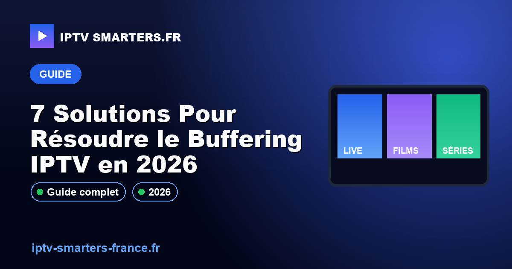

7 Solutions Pour Résoudre le Buffering IPTV en 2026

15 mai 2026Vous en avez assez du buffering constant sur votre IPTV ? En 2026, 80% des utilisateurs IPTV rencontrent ce problème qui gâche votre expérience de visionnage. Mais ne vous inquiétez pas, il existe des solutions efficaces pour y remédier. Découvrez comment diagnostiquer précisément votre problème de mise en mémoire tampon et appliquez des solutions adaptées pour une expérience fluide. Ne laissez pas une connexion Internet lente ruiner vos soirées cinéma. Consultez nos abonnements IPTV pour des options sans buffering. Pour une assistance immédiate, contactez-nous sur WhatsApp.
Pourquoi mon IPTV buffer-t-il constamment ?
Pour résoudre le buffering IPTV constant, vérifiez votre connexion internet, ajustez les paramètres de streaming, et utilisez un VPN pour contourner les restrictions. En 2026, le problème persiste principalement à cause d'une connexion Internet inadéquate ou de paramètres de streaming mal configurés. Un diagnostic précis peut vous aider à identifier la source du problème et à appliquer les solutions nécessaires.
Comment améliorer la vitesse de mon IPTV ?
Optimiser votre connexion Internet
Une connexion de 25 Mbps est recommandée pour une expérience IPTV optimale. Voici comment améliorer votre vitesse :
- Connectez-vous directement au routeur avec un câble Ethernet pour réduire la latence.
- Redémarrez régulièrement votre routeur pour libérer la bande passante.
- Utilisez un Anti-Freeze CDN pour stabiliser le flux IPTV.
Quels réglages pour réduire le buffering ?
Améliorer les réglages de votre IPTV peut significativement réduire le buffering. Consultez notre guide sur WhatsApp pour obtenir de l'aide en temps réel.
- Réduisez la qualité de streaming en utilisant le H.265/HEVC pour un débit plus efficace.
- Utilisez une playlist M3U optimisée avec Xtream Codes API.
- Configurez un bitrate adaptatif pour ajuster automatiquement la qualité vidéo selon la bande passante disponible.
Les Avantages de l'IPTV Premium
L'IPTV premium offre de nombreux avantages pour les utilisateurs à la recherche d'une expérience télévisuelle enrichie et flexible :
- Accès à plus de 10 000 chaînes internationales et locales.
- Fonctionnalité de replay sur plus de 100 chaînes.
- EPG XMLTV intégré pour une meilleure planification.
- Technologie Anti-Freeze assurant une diffusion continue sans interruption.
- Compatibilité avec une large gamme d'appareils.
Avec plus de 500 000 utilisateurs à travers le monde, l'IPTV premium s'impose comme l'option de choix pour les amateurs de télévision.
Comment Fonctionne l'IPTV ?
Technologie Derrière l'IPTV
L'IPTV repose sur la transmission de flux vidéo via Internet en utilisant des technologies avancées telles que le codec H.265/HEVC et des protocoles comme Xtream Codes API pour garantir une qualité de diffusion optimale. Le bitrate adaptatif permet d'ajuster automatiquement la qualité en fonction de votre connexion, assurant une lecture fluide même avec des variations de débit.
Pour découvrir nos offres et choisir celle qui vous convient, voir nos abonnements IPTV.
- Débit recommandé : 25 Mbps pour 4K, 10 Mbps pour HD
- Codec : H.265/HEVC
- Appareils compatibles : Android TV, Firestick 4K, WebOS LG, Tizen Samsung, tvOS Apple TV
Guide d'Installation IPTV
Suivez ces étapes simples pour installer votre service IPTV :
- Téléchargez l'application IPTV Smarters sur votre appareil compatible.
- Ouvrez l'application et sélectionnez "Ajouter un utilisateur".
- Entrez vos identifiants Xtream Codes API reçus par email.
- Sélectionnez "Connexion" pour accéder à vos chaînes.
- Profitez de votre service IPTV avec une interface intuitive.
L'IPTV est-il légal ?
Oui, l'IPTV est légal tant que le fournisseur possède les droits de diffusion des chaînes. Assurez-vous de choisir un service conforme aux réglementations locales pour éviter tout problème juridique.
Comment améliorer la qualité de diffusion IPTV ?
Pour améliorer la qualité, vérifiez que votre connexion Internet est stable et rapide. Utilisez un câble Ethernet plutôt que le Wi-Fi et assurez-vous que votre appareil est compatible avec le codec H.265/HEVC.
Peut-on utiliser l'IPTV sur plusieurs appareils ?
Oui, la plupart des abonnements IPTV permettent l'utilisation sur plusieurs appareils. Cependant, vérifiez les termes de votre abonnement pour connaître le nombre exact de connexions simultanées autorisées.
Conclusion
En résumé, l'IPTV représente une solution idéale pour ceux qui souhaitent diversifier leur expérience télévisuelle grâce à une technologie de pointe et une flexibilité incomparable. Ne ratez pas l'opportunité de changer votre manière de consommer la télévision avec nos services IPTV. Contactez-nous pour activer mon accès maintenant et commencez à explorer un monde de divertissement sans limites. Pour plus d'informations, Consultez nos autres guides d'installation IPTV.